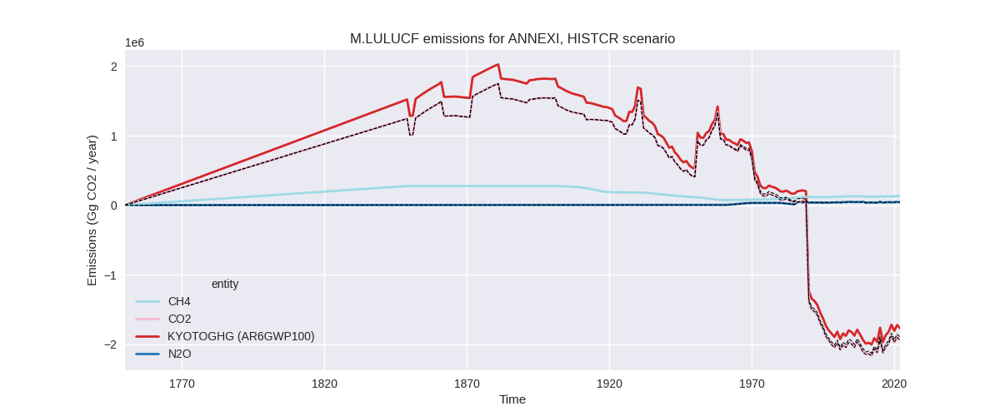

Change analysis for ANNEXI for PRIMAP-hist v2.5.1_final compared to
v2.5_final
Overview over
emissions by sector and gas
The following figures show the aggregate national total emissions
excluding LULUCF AR6GWP100 for the country reported priority scenario.
The dotted linesshow the v2.5_final data.

The following figures show the aggregate national total emissions
excluding LULUCF AR6GWP100 for the third party priority scenario. The
dotted linesshow the v2.5_final data.
Overview over changes
In the country reported priority scenario we have the following
changes for aggregate Kyoto GHG and national total emissions excluding
LULUCF (M.0.EL):
- Emissions in 2022 have changed by -0.0%% (-1924.00 Gg CO2 / year)
- Emissions in 1990-2022 have changed by -0.0%% (-422.03 Gg CO2 / year)
In the third party priority scenario we have the following changes
for aggregate Kyoto GHG and national total emissions excluding LULUCF
(M.0.EL):
- Emissions in 2022 have changed by 0.4%% (61374.00 Gg CO2 / year)
- Emissions in 1990-2022 have changed by -0.7%% (-124649.55 Gg CO2 / year)
Most
important changes per scenario and time frame
In the country reported priority scenario the
following sector-gas combinations have the highest absolute impact on
national total KyotoGHG (AR6GWP100) emissions in 2022
(top 5):
- 1: 1.B.2, CH4 with 16545.56 Gg CO2 / year (3.6%)
- 2: 2, CO2 with -15753.62 Gg CO2 / year (-1.9%)
- 3: M.AG.ELV, N2O with -15004.27 Gg CO2 / year (-2.3%)
- 4: 4, CH4 with 14787.64 Gg CO2 / year (3.5%)
- 5: 1.A, N2O with 7266.70 Gg CO2 / year (8.7%)
In the country reported priority scenario the
following sector-gas combinations have the highest absolute impact on
national total KyotoGHG (AR6GWP100) emissions in
1990-2022 (top 5):
- 1: 1.B.2, CH4 with 501.38 Gg CO2 / year (0.1%)
- 2: 2, CO2 with -477.38 Gg CO2 / year (-0.1%)
- 3: M.AG.ELV, N2O with -454.67 Gg CO2 / year (-0.1%)
- 4: 4, CH4 with 448.11 Gg CO2 / year (0.1%)
- 5: 1.B.1, CO2 with -402.85 Gg CO2 / year (-3.0%)
In the third party priority scenario the following
sector-gas combinations have the highest absolute impact on national
total KyotoGHG (AR6GWP100) emissions in 2022 (top
5):
- 1: 1.A, CO2 with 168086.00 Gg CO2 / year (1.4%)
- 2: 2, CO2 with -77304.48 Gg CO2 / year (-11.8%)
- 3: 1.B.2, CH4 with -46273.38 Gg CO2 / year (-7.0%)
- 4: 1.B.1, CO2 with -16208.81 Gg CO2 / year (-13.5%)
- 5: 4, CH4 with 15755.74 Gg CO2 / year (3.0%)
In the third party priority scenario the following
sector-gas combinations have the highest absolute impact on national
total KyotoGHG (AR6GWP100) emissions in 1990-2022 (top
5):
- 1: 2, CO2 with -104658.39 Gg CO2 / year (-15.5%)
- 2: 1.B.2, CH4 with -58336.75 Gg CO2 / year (-9.6%)
- 3: M.AG.ELV, N2O with 15852.54 Gg CO2 / year (3.1%)
- 4: 1.A, CO2 with 14699.55 Gg CO2 / year (0.1%)
- 5: 1.B.2, CO2 with 11239.19 Gg CO2 / year (21.7%)
Notes on data changes
No country specific notes present for this changelog.
Changes by sector and gas
For each scenario and time frame the changes are displayed for all
individual sectors and all individual gases. In the sector plot we use
aggregate Kyoto GHGs in AR6GWP100. In the gas plot we usenational total
emissions without LULUCF. ## country reported scenario
2022
1990-2022
third party scenario
2022
1990-2022
Detailed changes for the
scenarios:
country reported scenario
(HISTCR):
Most important changes
per time frame
For 2022 the following sector-gas combinations have
the highest absolute impact on national total KyotoGHG (AR6GWP100)
emissions in 2022 (top 5):
- 1: 1.B.2, CH4 with 16545.56 Gg CO2 / year (3.6%)
- 2: 2, CO2 with -15753.62 Gg CO2 / year (-1.9%)
- 3: M.AG.ELV, N2O with -15004.27 Gg CO2 / year (-2.3%)
- 4: 4, CH4 with 14787.64 Gg CO2 / year (3.5%)
- 5: 1.A, N2O with 7266.70 Gg CO2 / year (8.7%)
For 1990-2022 the following sector-gas combinations
have the highest absolute impact on national total KyotoGHG (AR6GWP100)
emissions in 1990-2022 (top 5):
- 1: 1.B.2, CH4 with 501.38 Gg CO2 / year (0.1%)
- 2: 2, CO2 with -477.38 Gg CO2 / year (-0.1%)
- 3: M.AG.ELV, N2O with -454.67 Gg CO2 / year (-0.1%)
- 4: 4, CH4 with 448.11 Gg CO2 / year (0.1%)
- 5: 1.B.1, CO2 with -402.85 Gg CO2 / year (-3.0%)
Changes in the main sectors for aggregate KyotoGHG (AR6GWP100)
are
- 1: Total sectoral emissions in 2022 are 12518400.00
Gg CO2 / year which is 78.8% of M.0.EL emissions. 2022 Emissions have
changed by 0.2% (19450.00 Gg CO2 /
year). 1990-2022 Emissions have changed by 0.0% (225.70 Gg CO2 / year).
- 2: Total sectoral emissions in 2022 are 1326023.10
Gg CO2 / year which is 8.3% of M.0.EL emissions. 2022 Emissions have
changed by -0.9% (-12218.40 Gg CO2 /
year). 1990-2022 Emissions have changed by -0.0% (-370.25 Gg CO2 / year).
- M.AG: Total sectoral emissions in 2022 are
1507307.60 Gg CO2 / year which is 9.5% of M.0.EL emissions. 2022
Emissions have changed by -1.6%
(-25206.40 Gg CO2 / year). 1990-2022 Emissions have changed by -0.1% (-763.83 Gg CO2 / year).
- 4: Total sectoral emissions in 2022 are 503574.03
Gg CO2 / year which is 3.2% of M.0.EL emissions. 2022 Emissions have
changed by 3.0% (14686.82 Gg CO2 /
year). 1990-2022 Emissions have changed by 0.1% (445.06 Gg CO2 / year). For 2022 the
changes per gas
are:
- 5: Total sectoral emissions in 2022 are 29730.21 Gg
CO2 / year which is 0.2% of M.0.EL emissions. 2022 Emissions have
changed by 4.8% (1363.74 Gg CO2 /
year). 1990-2022 Emissions have changed by 0.1% (41.32 Gg CO2 / year). For 2022 the
changes per gas
are:
third party scenario (HISTTP):
Most important changes
per time frame
For 2022 the following sector-gas combinations have
the highest absolute impact on national total KyotoGHG (AR6GWP100)
emissions in 2022 (top 5):
- 1: 1.A, CO2 with 168086.00 Gg CO2 / year (1.4%)
- 2: 2, CO2 with -77304.48 Gg CO2 / year (-11.8%)
- 3: 1.B.2, CH4 with -46273.38 Gg CO2 / year (-7.0%)
- 4: 1.B.1, CO2 with -16208.81 Gg CO2 / year (-13.5%)
- 5: 4, CH4 with 15755.74 Gg CO2 / year (3.0%)
For 1990-2022 the following sector-gas combinations
have the highest absolute impact on national total KyotoGHG (AR6GWP100)
emissions in 1990-2022 (top 5):
- 1: 2, CO2 with -104658.39 Gg CO2 / year (-15.5%)
- 2: 1.B.2, CH4 with -58336.75 Gg CO2 / year (-9.6%)
- 3: M.AG.ELV, N2O with 15852.54 Gg CO2 / year (3.1%)
- 4: 1.A, CO2 with 14699.55 Gg CO2 / year (0.1%)
- 5: 1.B.2, CO2 with 11239.19 Gg CO2 / year (21.7%)
Changes in the main sectors for aggregate KyotoGHG (AR6GWP100)
are
- 1: Total sectoral emissions in 2022 are 13083586.00
Gg CO2 / year which is 80.6% of M.0.EL emissions. 2022 Emissions have
changed by 0.9% (116473.00 Gg CO2 /
year). 1990-2022 Emissions have changed by -0.3% (-40032.36 Gg CO2 / year).
- 2: Total sectoral emissions in 2022 are 1173778.20
Gg CO2 / year which is 7.2% of M.0.EL emissions. 2022 Emissions have
changed by -6.6% (-83231.40 Gg CO2 /
year). 1990-2022 Emissions have changed by -8.6% (-102704.26 Gg CO2 / year). For 2022
the changes per gas
are:
For 1990-2022 the changes per gas
are:
- M.AG: Total sectoral emissions in 2022 are
1351717.70 Gg CO2 / year which is 8.3% of M.0.EL emissions. 2022
Emissions have changed by 0.8%
(10662.90 Gg CO2 / year). 1990-2022 Emissions have changed by 1.2% (17557.94 Gg CO2 / year).
- 4: Total sectoral emissions in 2022 are 574674.86
Gg CO2 / year which is 3.5% of M.0.EL emissions. 2022 Emissions have
changed by 2.8% (15816.31 Gg CO2 /
year). 1990-2022 Emissions have changed by 0.1% (479.17 Gg CO2 / year). For 2022 the
changes per gas
are:
- 5: Total sectoral emissions in 2022 are 46814.08 Gg
CO2 / year which is 0.3% of M.0.EL emissions. 2022 Emissions have
changed by 3.7% (1653.77 Gg CO2 /
year). 1990-2022 Emissions have changed by 0.1% (50.11 Gg CO2 / year). For 2022 the
changes per gas
are: